GIT Ariketa 5.1.3
Contenido completo del documento original del ejercicio.
GIT Ariketa 5.1.3
Crea en GitHub un repositorio privado llamado ariketa5.1.3-tuNombreApellido.
Crea un README.md con un pequeña descripción.
Descárgalo en tu repositorio local.
Crea un documento llamado ziber_localidades.txt con el siguiente contenido: Urnieta, Andoain, Irun, Beasain, Donostia y Pasaia.
Haz commit con el mensaje correspondiente.
Añade al documento: Lasarte-Oria y Oiartzun.
Comitea estos cambios con el mensaje correspondiente.
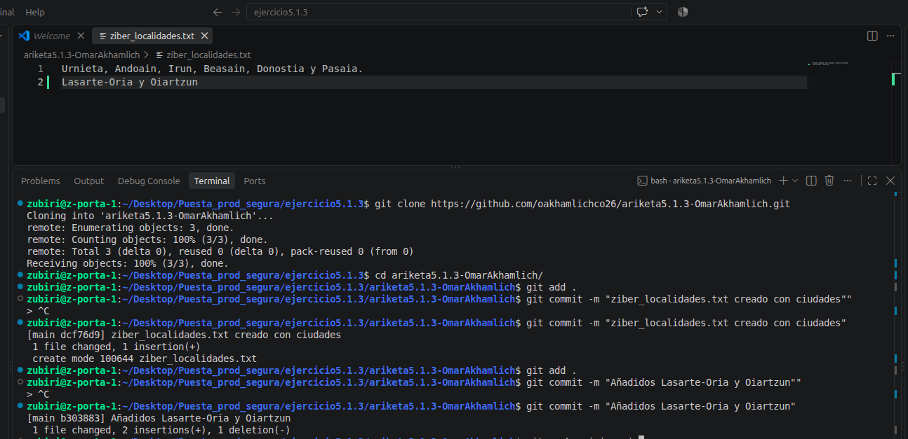
Sube los cambios a GitHub y comprueba que todo está correctamente.
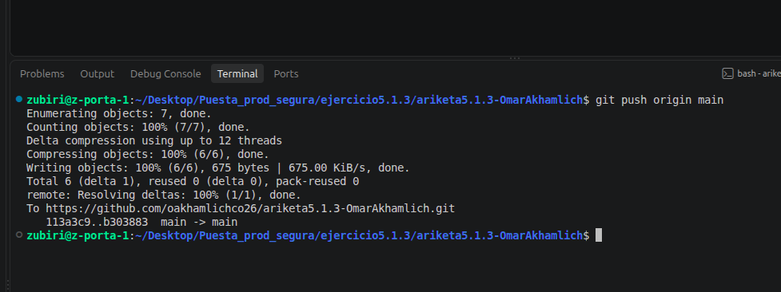
Añade al fichero local: Lesaka.
Comitea estos cambios con el mensaje correspondiente.
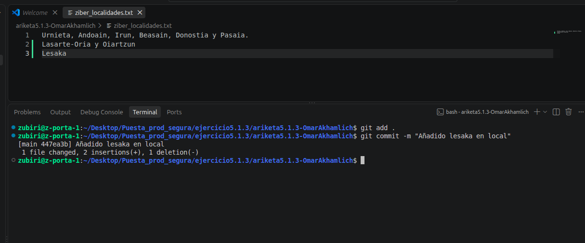
Desde GitHub añade Ordizia y haz commit.
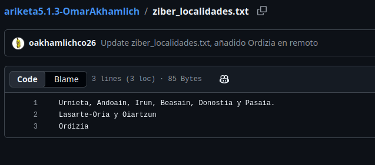
Intenta actualizar tu repositorio local y el de GitHub. ¿Qué ocurre?
Al haber cambio sen el mismo archivo tanto en remoto como local, git no sabe diferenciar cual es la version verdadera, por lo que deja un conflicto.
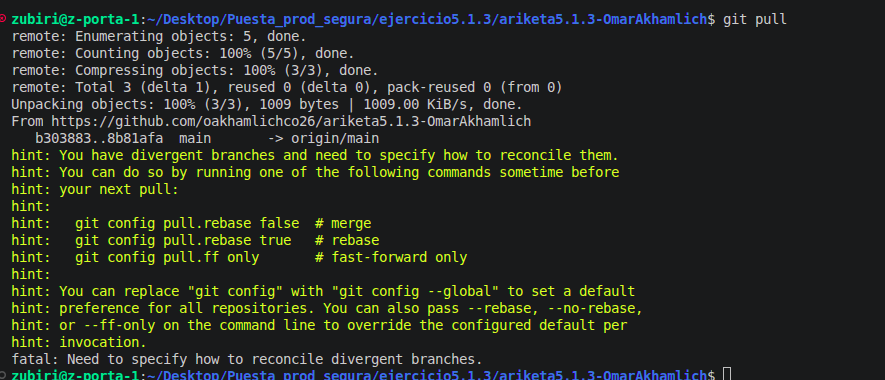
Resuelve el conflicto mediante los comandos necesarios para que tu repositorio local y el de GitHub estén actualizados/sincronizados correctamente.
Usando git pull –rebase, git fuerza a traer los cambios, usando los caracteres < = y > para diferenciar ambos cambios de local y remoto. Asi, el usuario decidira con que cambio quedarse, eliminando dichos caracteres del archivo, para posteriormente commitear y pushear a remoto.
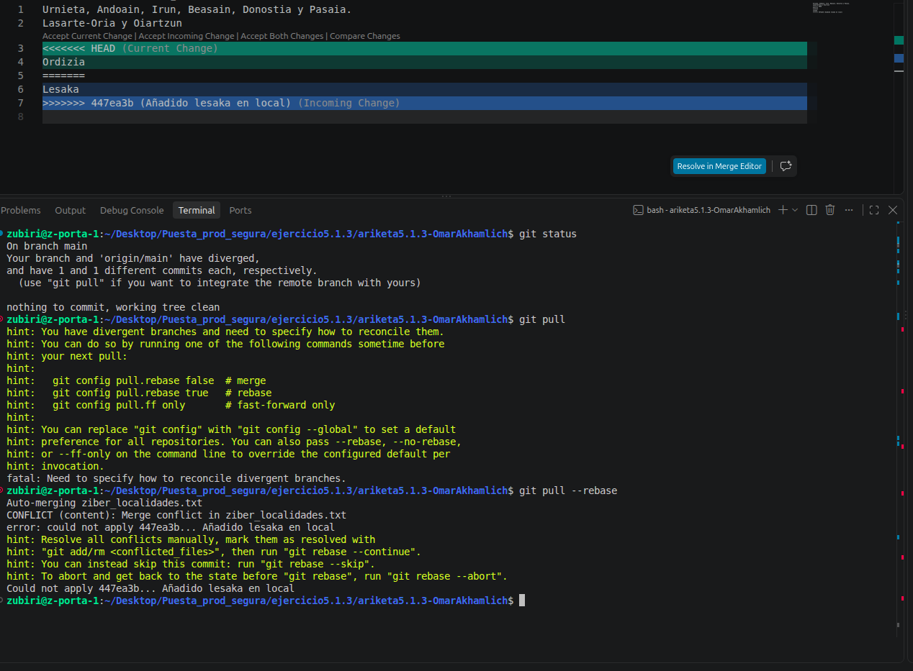
En el documento ziber_localidades.txt debe aparecer lo siguiente:
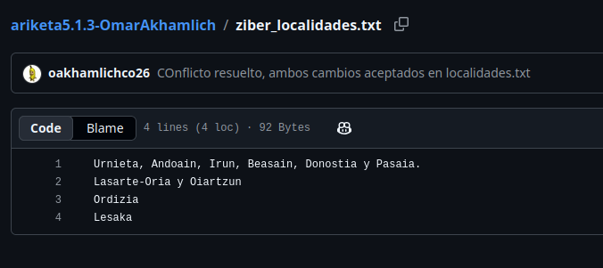
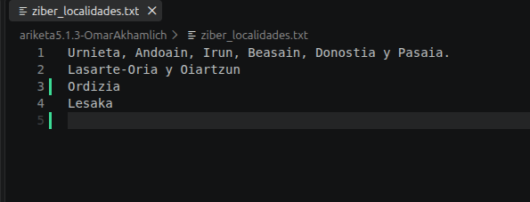
| Urnieta Andoain Irun Beasain Donostia Pasaia Lasarte-Oria Oiartzun Lesaka Ordizia |
EXTRA — TRABAJAR CON RAMAS
A partir de ahora evitaremos que todos los cambios se realicen directamente sobre main.
Crea una nueva rama:
| git switch -c feature/comarcas git branch |
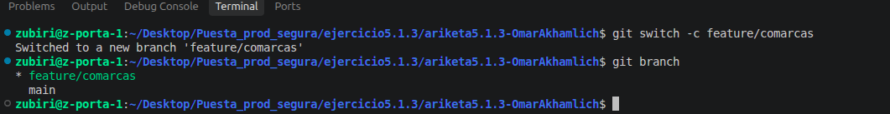
Añade al fichero: Hondarribia, Errenteria, Hernani. Realiza un commit:
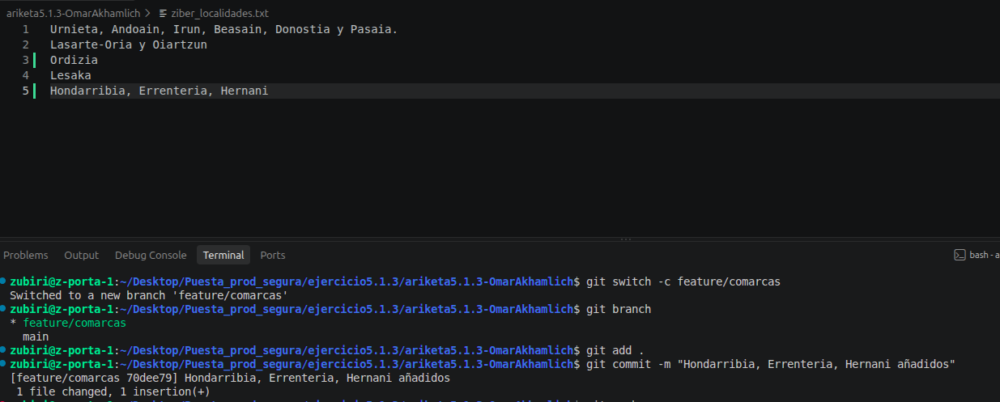
Publica la rama y accede a GitHub para comprobar que existe:
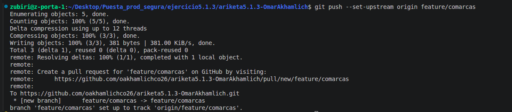
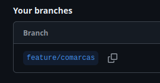
| Pregunta: ¿Qué diferencia hay entre main y feature/comarcas? Ahora mismo, la feature/comarcas contiene cambios nuevos y por su nombre es una rama, que sera mergeada contra main y a posteriori, eliminada. |
|---|
Desde GitHub crea un Pull Request: feature/comarcas → main. La descripción debe explicar qué cambios has realizado, qué archivos has modificado y qué pruebas has realizado.
Antes de aceptar el Pull Request, revisa los cambios. Después realiza el merge.
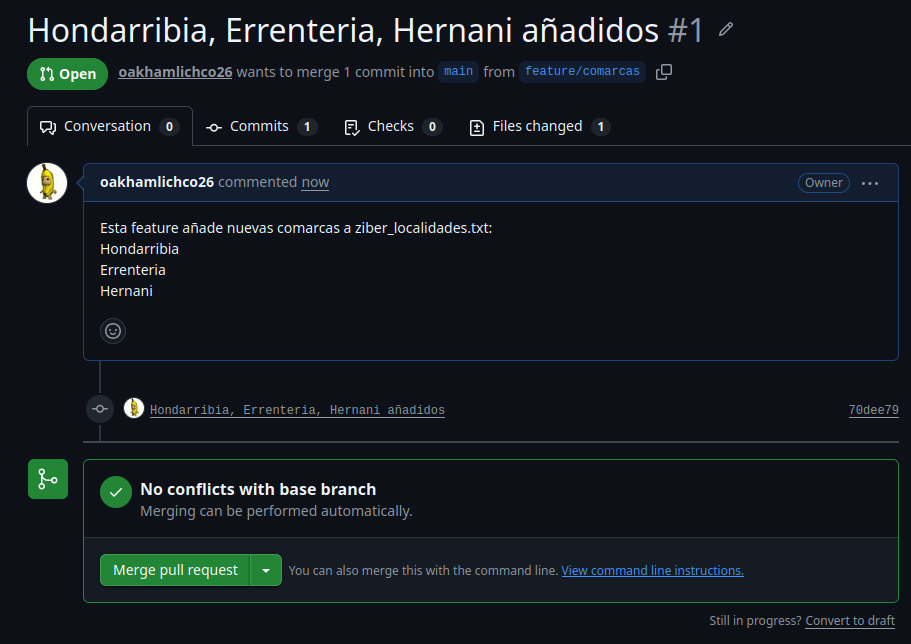
Después del merge, vuelve a tu terminal:
El repositorio debe quedar sincronizado.
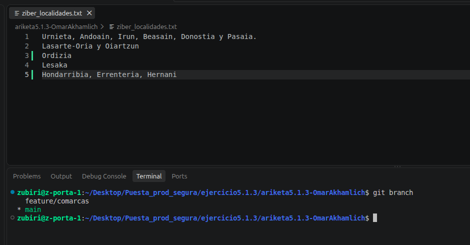
Simula un error añadiendo al archivo: LOCALIDAD_INCORRECTA.
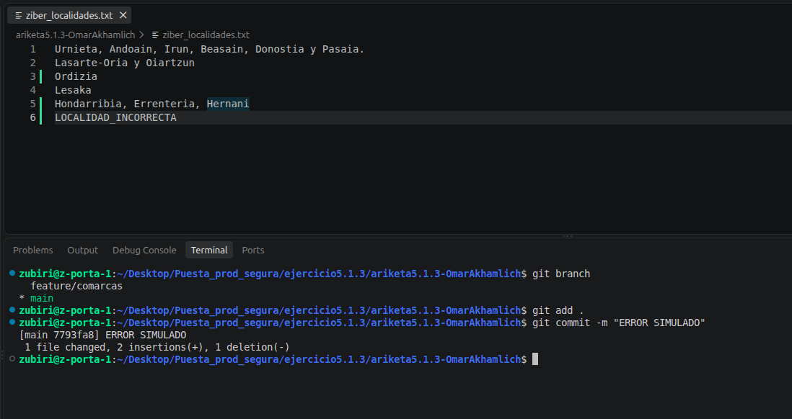
El cambio es incorrecto. Investiga y utiliza git revert para deshacer el commit:
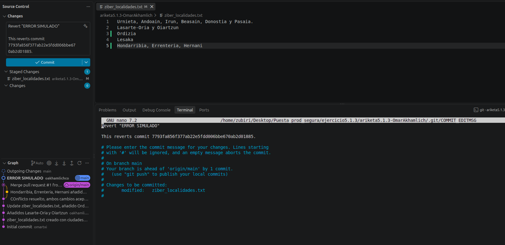
| Pregunta: ¿Por qué git revert es preferible a borrar o modificar el historial cuando trabajamos sobre una rama compartida? Git revert genera logs y commits del revert, por lo que se queda dentro del control de versiones en caso de querer recuperar el commit. |
|---|
Crea un archivo config.env con contenido sensible (usuario, token, contraseña) y comprueba git status.
| GITHUB_USER=usuario API_TOKEN=[VALOR_OCULTO] PASSWORD=[VALOR_OCULTO] |
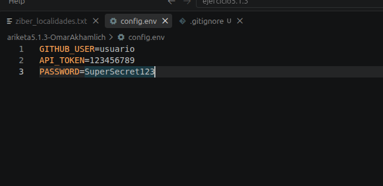
Crea o modifica .gitignore para que incluya:
| .env *.env *.key *.pem secrets/ |
Comprueba nuevamente git status.
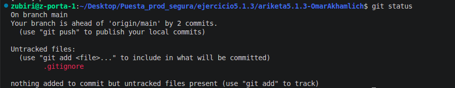
| Pregunta: ¿Por qué un archivo ignorado no aparece en git status? Gracias a el archivo .gitignore, podemos hacer que git no suba y commitee ciertos archivos. Asi pudiendo proteger archivos con informacion sensible como usuarios, contraseña... |
|---|
Imagina el siguiente error:
| git add config.env git commit -m "Añade configuración" git push |
Posteriormente añades config.env al .gitignore.
| Pregunta: ¿Ha desaparecido el secreto del repositorio? Comprueba git log --all -- config.env e investiga qué debería hacer un equipo si una contraseña real hubiese sido publicada accidentalmente. Al haber commiteado antes de añadir el gitignore, este archivo .env se encuentra en el historial de versiones. Por lo que el equipo deberia primero cambiar la contraseña, y 2 borrar del historial dicho commit. |
|---|